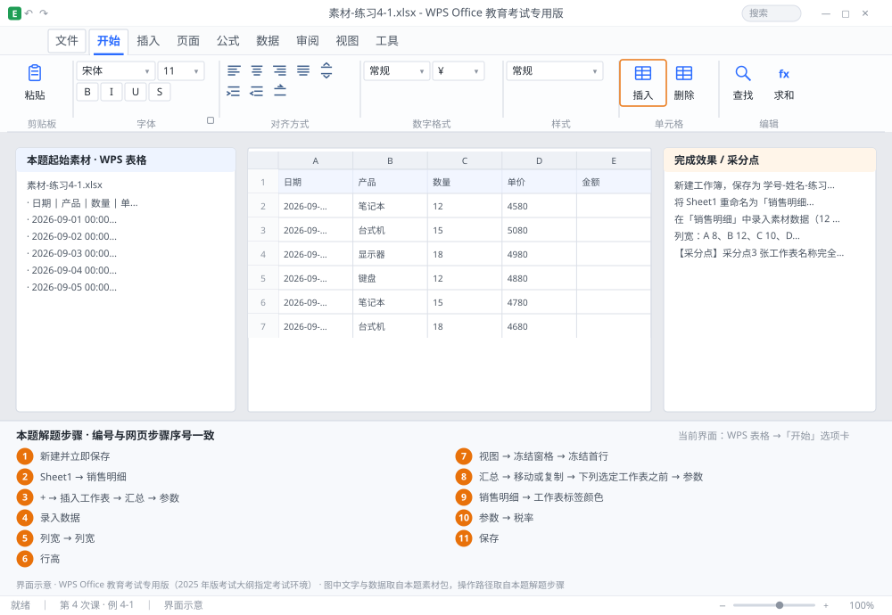

完成比对文档 · 例 4-1
建工作簿：3 张工作表 + 标签颜色 + 列宽行高 + 冻结首行 ｜ 第 4 次课 / WPS 表格 ｜ 网页：实操-表格1.html ｜ 考试环境：WPS Office 教育考试专用版（2025 年版考试大纲指定考试环境）
用途 本页按修订后的题目要求与解题步骤生成，是交卷自查的结果基准：
逐项列出每一步应出现的可复核结果，配合模拟操作截图与解题结果文件使用。
它不是素材包的一部分，不会预置答案动作；起始素材仍从本题素材包下载。
一、本题起始素材包
目录：练习素材/练习4-1-工作簿与工作表/ ｜
下载包：练习素材/下载/练习4-1-工作簿与工作表.zip
二、题目要求
- 新建工作簿，保存为 学号-姓名-练习4-1.xlsx。
- 将 Sheet1 重命名为「销售明细」，再插入 2 张工作表，分别命名为「汇总」「参数」。
- 在「销售明细」中录入素材数据（12 条记录，含表头）。
- 列宽：A 8、B 12、C 10、D 10、E 12；行高：第 1 行 24，其余 20。
- 冻结首行（滚动时表头始终可见）。
- 把「汇总」移动到「参数」之前，并将「销售明细」标签设为红色。
- 在「参数」表 B1 输入「税率」、B2 输入 0.13。
- 保存。
三、解题步骤（编号与下方核对表、截图编号一致）
- 新建并立即保存。Ctrl+N 新建 → F12 另存为 → 文件名 学号-姓名-练习4-1.xlsx → 文件类型选「WPS 表格 文件(*.xlsx)」。先存再填，是防断电、防误关的第一习惯。
- 重命名 Sheet1。双击工作表标签「Sheet1」→ 标签变可编辑状态 → 输入「销售明细」→ Enter。
- 插入两张表。点标签栏右侧的「+」号两次（或右键任意标签 →「插入工作表」）→ 分别双击改名为「汇总」「参数」。
- 录入数据。点 A1 开始录入，Tab 向右、Enter 向下；Alt+Enter 可在单元格内换行。日期直接输 2026-9-1，系统会自动识别为日期；不要输 2026.9.1（会变文本）。
- 设列宽。选中 A 列列标 → 右键 →「列宽」→ 输入 8 → 确定；B 列 12、C 列 10、D 列 10、E 列 12，逐列设置。想快速自适应可双击列标右边界，但题目给数值就必须用「列宽」对话框。
- 设行高。选中第 1 行行号 → 右键 →「行高」→ 24；再选中第 2~13 行 → 行高 20。
- 冻结首行。「视图」→「冻结窗格」→「冻结首行」。验证：向下滚动，第 1 行不动即为成功。
- 移动工作表。右键「汇总」标签 →「移动或复制」→ 在「下列选定工作表之前」选「参数」→ 不勾「建立副本」→ 确定。（拖动标签也能移，但跨位置远时容易拖错。）
- 设标签颜色。右键「销售明细」标签 →「工作表标签颜色」→ 选红色。
- 填参数表。切到「参数」表 → B1 输入「税率」→ B2 输入 0.13。
- 保存。Ctrl+S。
四、完成效果 / 采分点
采分点3 张工作表名称完全一致 · 工作表顺序为 销售明细 / 汇总 / 参数 · 列宽 5 项与行高 2 项数值正确 · 已冻结首行 · 标签颜色为红色 · 参数表 B2 = 0.13 · 文件为 .xlsx
五、逐项完成核对表
| 步骤 | 关键操作路径 | 应出现的结果（可复核） |
|---|
| 1 | 新建并立即保存 | F12、学号-姓名-练习4-1.xlsx |
| 2 | 重命名 Sheet1 | 「Sheet1」、「销售明细」 |
| 3 | 插入两张表 | 「+」、「插入工作表」、「汇总」、「参数」 |
| 4 | 录入数据 | A1 |
| 5 | 设列宽 | 「列宽」 |
| 6 | 设行高 | 1 行、「行高」、13 行 |
| 7 | 冻结首行 | 「视图」、「冻结窗格」、「冻结首行」、1 行 |
| 8 | 移动工作表 | 「汇总」、「移动或复制」、「下列选定工作表之前」、「参数」、「建立副本」 |
| 9 | 设标签颜色 | 「销售明细」、「工作表标签颜色」 |
| 10 | 填参数表 | 「参数」、B1、「税率」、B2 |
| 11 | 保存 | 保存 |
六、模拟操作截图

界面示意 · WPS Office 教育考试专用版 · 橙色编号与本题解题步骤序号一致；
图中文字与数据取自本题素材包，功能入口取自本题解题步骤。
核对方法：按网页解题步骤完成并另存自己的成稿后，逐行比对本表第 3 列的
参数、公式、区域、文件名与对象数量；再对照网页「完成效果 / 采分点」检查版式是否一致。